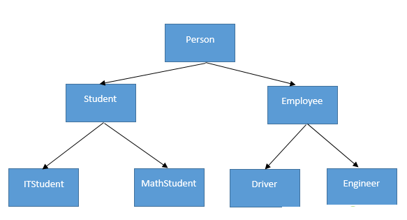
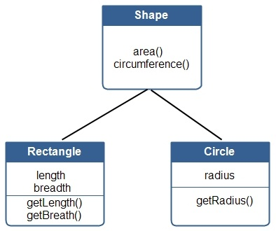
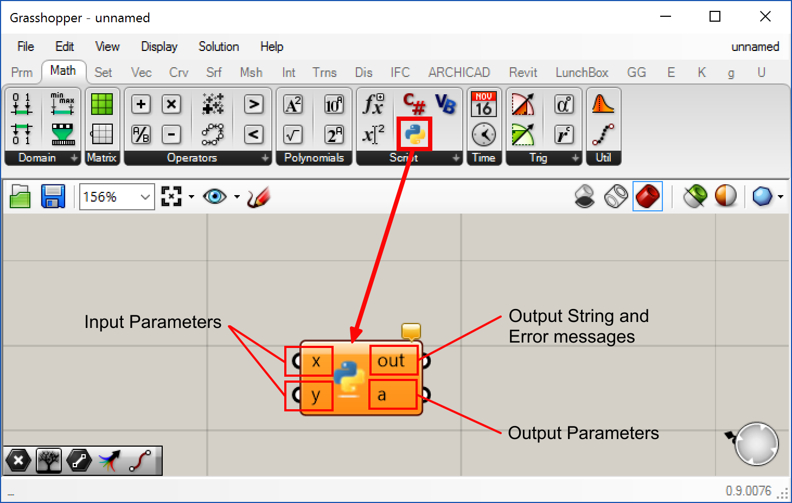
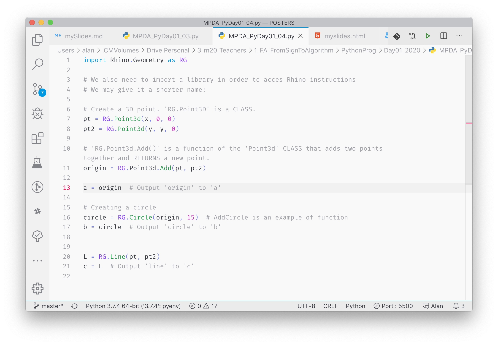

Python Intro
MPDA’21
October 20, 2020
What is Programming?
Programming is a way to “instruct the computer to perform various tasks”.
'instruct the computer'?
It means that you privide the computer with a set of instructions in a language it can understand.
That language, in our case, will be python
'perform various tasks'?
A task could be anything. For example:
- Calculating simple interest, given principal, rate and time.
- Calculate the trayectory of a missile
- Create complex 3D objects, animation, etc.
What is Python?

Python is an object-oriented programming language, first developed in 1980.
It has become extremelly popular in recent years due to its ease of use.
object oriented means that the language is structured around objects, which are also called classes:
- Each
classcontains (or encapsulates) a specific functionality. - A class may inherit functionality from it’s parent class.
- This makes the language extremelly extendable.


During this semester, we’ll be making this two questions a lot:
- What is an specific object?
- Is this object a point? Is this object a mesh?
- What does a specific object have?
- Does a shape have an area?
- Does a rectangle have a length?
Python structure
- Comments
- Variables
- Functions
- Classes
- Libraries
Variables
Variables store information to be referenced and used by programs.
They also provide a way of labeling data with a descriptive name.
Computed variables
Computed variables have values that are the result of an operation.
This operation can be very simple (like a sum), or extremelly complex.
Functions
Functions (also called methods sometimes), encapsulate a specific functionality in a specific name.
This allows you to reuse the same logic in different parts of your program.
Functions can have many inputs, but only one output called the return value of the function
Classes
class Person:
name = "Alan"
surname = "Rynne"
def FullName(name, surname):
return name + " " + surnameClasses contain variables and methods(functions), that are related to the same concept.
Libraries
Libraries are a collection of classes defined by a given name and have to be imported into your script.
- The
mathlibrary contains many usefull functions likesin()orcos() - The
Rhinolibrary contains everything Rhino related
Built-in classes
Python already comes with some basic classes, which are usually refered to as data-types.
These data-types contain the most basic of functionality
Some basic data-types are:
| Type | Name | Example |
|---|---|---|
int |
Integer | 5 |
double |
Double | 1.0435 |
bool |
Boolean | True, False |
str |
String | "Just text" |
char |
Character | 'a' |
Other more complex data-types include collections:
| Type | Name | Example |
|---|---|---|
[] |
List | [1,4,5,8] |
() |
Tuple | ("Alan","Programmer") |
{} |
Dictionary | {1:"Steve", 2:"Bill"} |
Rhino classes
We will be using many Rhino classes during this course. Mainly the ones under Rhino.Geometry
Some of the most popular ones will be
| Type | Name | Example |
|---|---|---|
Point3d |
3D Point | RG.Point3d() |
Vector3d |
3D Vector | RG.Vector3d() |
Polyline |
Polyline | RG.Polyline() |
NurbsCurve |
3D Curve | RG.NurbsCurve() |
Mesh |
Polygonal Mesh | RG.Mesh() |
NurbsSurface |
Nurbs Surface | RG.NurbsSurface() |
How?
We will be using the GHPython component

And VSCode further in the course

Comments
Comments are just text, they do not affect our code in any way.
They are used to include detailed instructions or clarifications in our code.
Comments in
Pythonalways start with a hashtag#